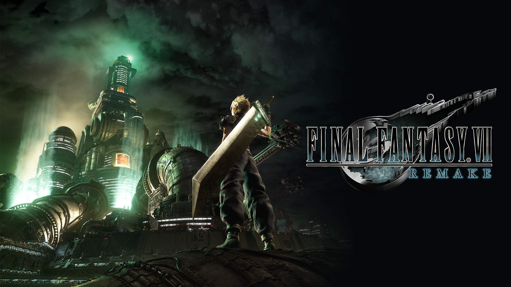

Legacy
Home
Story
Music
Legacy
Contact
Legacy: The game inspired an unofficial version for the NES by Chinese company Shenzhen Nanjing Technology. This port features the Final Fantasy VII game scaled back to 2D, with some of the side quests removed. The game's popularity and open-ended nature also led director Kitase and scenario writer Nojima to establish a plot-related connection between Final Fantasy VII and Final Fantasy X-2. The character Shinra from Final Fantasy X-2 proposes the concept of extracting the life energy from within the planet Spira. Nojima has stated that Shinra and his proposal are a deliberate nod to the Shinra Company and that he envisioned the events of Final Fantasy X-2 as a prequel to those in Final Fantasy VII. The advances in technology used to create the FMV sequences and computer graphics for Final Fantasy VII allowed Sakaguchi to begin production on the first Final Fantasy film, Final Fantasy: The Spirits Within. The game introduced a particular aesthetic to the series—fantasy suffused with modern-to-advanced technology—that was explored further in Final Fantasy VIII, The Spirits Within, and Final Fantasy XV. Re-releases of Square games in Japan with bonus features would occur frequently after the release of Final Fantasy VII International. Later titles that would be re-released as international versions include Final Fantasy X and other follow-ups from the franchise, as well as the Kingdom Hearts series. Several characters from Final Fantasy VII have made cameo appearances in other Square Enix titles, most notably the fighting game Ehrgeiz and the popular Final-Fantasy-to-Disney crossover series Kingdom Hearts. Additionally, fighting video game Dissidia Final Fantasy includes Final Fantasy VII characters such as Cloud and Sephiroth, and allows players to fight with characters from throughout the Final Fantasy series, and its follow-up, Dissidia 012 Final Fantasy, included Tifa as well. Cloud is also a playable character in Final Fantasy Tactics. In December 2015, Cloud was released as a downloadable content character for the Nintendo crossover fighting games Super Smash Bros for Nintendo 3DS and Wii U, along with a stage based on Midgar. He returned in the 2018 sequel, Super Smash Bros. Ultimate. On television, Final Fantasy VII was parodied in the second season of Robot Chicken in 2006. Impact: Final Fantasy VII is credited as having the largest impact of the Final Fantasy series. In 2002, GameSpot ranked it as the second most influential game ever made. In 2007, GamePro ranked it 14th on their list of the most important games of all time, and in 2009 it was ranked the same place on their list of the most influential and innovative games of all time. Bill Loguidice and Matt Barton listed Final Fantasy VII among the 25 most influential games of all time. Samuel Roberts of Retro Gamer, writing for GamesRadar, called FFVII "one of the most important and influential RPGs of all time" in January 2020. The game is credited with allowing console role-playing games to gain mass-market appeal outside of Japan. Role-playing video games were a niche genre in North America up until Final Fantasy VII introduced the genre to a mainstream audience there, and it was the first Final Fantasy titlereleased in Europe. It popularized Japanese role-playing games outside of Japan, in addition to opening up the game console market for Western computer role-playing game developers such as BioWare. According to Gene Park of The Washington Post, FFVII "single-handedly put role-playing video games onthe global map". It was also a killer app for the original PlayStation, and demonstrated the advantages of CD-ROM media over ROM cartridge media. According to Sony Computer Entertainment founder and PlayStation architect Ken Kutaragi, Final Fantasy VII was "a driving force that propelled gaming forward" along with the PlayStation, and the game contributed to growing global awareness of Japanese popular culture along with anime. FFVII was one of the first video games produced at a blockbuster (AAA) scale. It was the most expensive video game ever developed up until then, and its expensive advertisement campaign was also unprecedented for a video game. It set a benchmark for video game graphics, full motion video, cinematic CGI production values, and movie-like presentation, along with its innovative blend of gameplay with dynamic cinematic camerawork. It also set a benchmark for orchestral video game music, with "Aerith's Theme" appearing on the Classic FM Hall of Fame at 16th place in 2012, and with Elizabeth Davis of Classic FM (UK) calling it "one of the most famouspieces of video game music ever written" and stating that FFVII helped introduce "a whole generation to the magic of orchestral music." The game's storytelling was considered revelatory for its time and resonated with most of its audience. The depth of its storytelling, along with its character building, emotional scenes, and cinematic production values, made it a landmark title for video game storytelling. Aerith's death in particular has often been referred to as one of the most significant moments from any video game. It is one of the most iconic deaths in video game history, is frequently cited as one of gaming's most shocking and emotional scenes, and cemented Sephiroth's status as one of the most infamous video game villains. The scene topped IGN's list of top 100 video game moments, calling it "a genre-defining moment" and representative of "gaming's emotional journey from kids' entertainment to modern storytelling medium". Brian Taylor, writing for Kill Screen, described a cottage industry of fan theories for how to return Aerith to life or prevent her death. He compared these efforts to the letter-writing campaign to convince Charles Dickens not to let Nell, the endearing protagonist of The Old Curiosity Shop, die at the end of the book. Taylor affirmed that the acts of discussing these fan theories and dissecting the game code to test them comprise a valid and important part of the experience of the game. The game has inspired numerous developers. GameSpot stated that Final Fantasy VII was "the RPG that would influence every role-playing game that would follow" after it, and that its cinematic approach to storytelling was widely adopted by later RPGs. Its Limit Break gameplay mechanic became a core mechanic in subsequent Final Fantasy titles. According to Samuel Roberts of Retro Gamer, the game's "character designs would shape Japanese RPGs for years to come". Fable creator Peter Molyneux considers FFVII to be the RPG that "defined the genre" for him. BioWare founder Greg Zeschuk cited FFVII as "the first really emotionally engaging game" he played and said it had "a big impact" on BioWare's work. Black Isle Studios cited FFVII as an inspiration for Planescape: Torment (1999). According to Maciej Miszczyk of Hardcore Gaming 101, FFVII's spell animations and character quests may have influenced Western computer RPGs such as Planescape: Torment and BioWare's Baldur's Gate II (2000). Media Molecule's Constantin Jupp credited FFVII with getting him into game design. Tim Schafer cited FFVII as one of his favorite games of all time. Thatgamecompany founder Jenova Chen cited FFVII as one of the biggest influences on his work and the game that inspired his adopted name (from the character Jenova). Themes: The game is noted for its cyberpunk themes, with GamesRadar+ calling it one of the best games of the genre, and Harry Mackin of Paste Magazine comparing its cyberpunk city of Midgar to Akira and Blade Runner. Aja Romano of The Daily Dot and Philip Boyes of Eurogamer cited Final Fantasy VII as an example of dieselpunk, a genre similar to steampunk. According to Comic Book Resources, the game's environmental and climate change themes are more relevant and meaningful in 2019 than they were in 1997. William Hughes of The A.V. Club notes that Barret and his terrorist cell AVALANCHE are one of the few examples of "heroic pop culture terrorists" in video games, and that the game's "political relevance remains" in a post-9/11 world. Dani Di Placido of Forbes also feels the game is still relevant in 2020, drawing parallels between the game's events and contemporary issues such as climate change, environmental catastrophe, economic collapse and the COVID-19 pandemic (comparing the latter to the game world after Meteor is summoned). Murray Clark of Esquire also argues that several characters wore clothing which anticipated several contemporary fashion trends. Final Fantasy VII is noted for its use of the unreliable narrator literary concept, drawing comparisons to later films such as Fight Club (1999), The Sixth Sense (1999), American Psycho (2000) and Memento (2000). Patrick Holleman and Jeremy Parish argue that the game takes the unreliable narrator concept a step further, with its interactivity establishing a connection between the player and the protagonist Cloud, setting Final Fantasy VII apart from films as well as other video games. According to Holleman, "no RPG has ever deliberately betrayed the connection between protagonist and player like FFVII does." Ric Manning of The Courier-Journal noted elements of psychoanalysis in the game. Sharon Packer identifies Cloud as having mental illness in the form of dissociative identity disorder (DID), while Katie Whitlock identifies him as having involuntary memory resulting from post-traumatic stress disorder (PTSD). Harry Mackin of Paste Magazine called the game "a subversion that deconstructs and comments meaningfully on how we think about heroism, masculinity and identity in videogame storytelling." Jack Ridsdale of PCGamesN argues that Cloud is a deconstruction of the hero archetype and toxic masculinity, and compares the plot twist about his true identity to that of Fight Club. According to Gene Park of The Washington Post, with its "cyberpunk story about personal delusions, mental illness, climate change and class warfare, it was Blade Runner for millennials." Pat Holleman's book Reverse Design: Final Fantasy VII (2018) examines the game's themes and topics in detail. He summarizes the game's plot as telling "a story about survivors." He explains that it is "a story about characters who have outlived the people, places, and things that gave them their identities" and that most of the characters are "motivated by the loss of something that once defined who they are." He notes that nearly all the major characters exhibit the "survivor's trio" which consists of losing "the world that defined" them, a"near-death experience" and "something that connects" them to their past.] He also notes that the game is, "at times, a deconstruction of a revenge story" in the sense that it "dismantles the idea of revenge in an insightful way." He considers Barrett's story to be the clearest illustration of the "tragic survivorship" and "survivor's trio" themes, such as the loss of his coal mining hometown, seeking revenge through militant environmentalism before eventually realizing revenge isn't the right motivation, and safeguarding a future for his adoptive daughter Marlene who is the only surviving connection to his past. He also considers the Limit Break mechanic to be a gameplay representation of the survivorship theme. He argues that these are themes which only adults can fully relate to, and were misunderstood by much of the game's predominantly adolescent audience upon release. Compilation of Final Fantasy VII: The world of Final Fantasy VII is explored further in the Compilation of Final Fantasy VII, a series of games, animated features, and short stories. The first title in the Compilation is the mobile game Before Crisis: Final Fantasy VII, a prequel focusing on the Turks' activities six years before the original game. The CGI film sequel Final Fantasy VII: Advent Children, set two years after the game, was the first title announced but the second to be released. Special DVD editions of the film included Last Order: Final Fantasy VII, an original video animation that recounts the destruction of Nibelheim. Dirge of Cerberus: Final Fantasy VII and its mobile phonecounterpart, Dirge of Cerberus Lost Episode: Final Fantasy VII, are third-person shooters set one year after Advent Children. Dirge focuses on the backstory of Vincent Valentine, whose history was left mostly untold in Final Fantasy VII. The most recent title is the PlayStation Portable game Crisis Core: Final Fantasy VII, an action role-playing game that centers on Zack's past. Related media and merchandise: Releases not under the Compilation label include Maiden Who Travels the Planet, which follows Aerith's journey in the Lifestream after her death, taking place concurrently with the second half of the original game. In 1998, the Official Final Fantasy VII Strategy Guide was licensed by Square Soft and published by Brady Games. Final Fantasy VII Snowboarding is a mobile port of the snowboard minigame featured in the original game, featuring different courses for the player to tackle. The game is downloadable on V Cast-compatible mobile phones and was first made available in 2005 in Japan and North America. In September 2009 Jason P. Blahuta, Michel S. Beaulieu Wiley created “Final Fantasy and Philosophy: The Ultimate Walkthrough”. This eBook is aphilosophical guide as to why and how players use certain characters in the Final Fantasy series, explains how gamer's perception of a character's weapon and clothing designs can change how they use them. The writers inform the reader that this eBook will give them an in-depth understanding of themselves and the game which will enhance their gaming experience. Final Fantasy VII G-Bike is a mobile game released for iOS and Android in December 2014, based on the motorbike minigame featured in the original game. In September 2007, Square Enix published Final Fantasy VII 10th Anniversary Ultimania. This book is an in-depth compilation of FFVII story-line and artwork. The Universal Studios Theme Park in Japan is developing a Final Fantasy VII themed virtual reality attraction. Final Fantasy VII Remake: With the announcement and development of the Compilation of Final Fantasy VII, speculation spread that a remake of the original Final Fantasy VII would be released for the PlayStation 3. This conjecture was sparked by the release of a video featuring the opening sequence of Final Fantasy VII recreated using the PlayStation 3's graphical capabilities at E3 2005. After years of speculation, it was announced at E3 2015. The game saw changes made to its story and combat system. The game is planned to be released over multiple installments, with the first part being released for the PlayStation 4 on April 10, 2020.